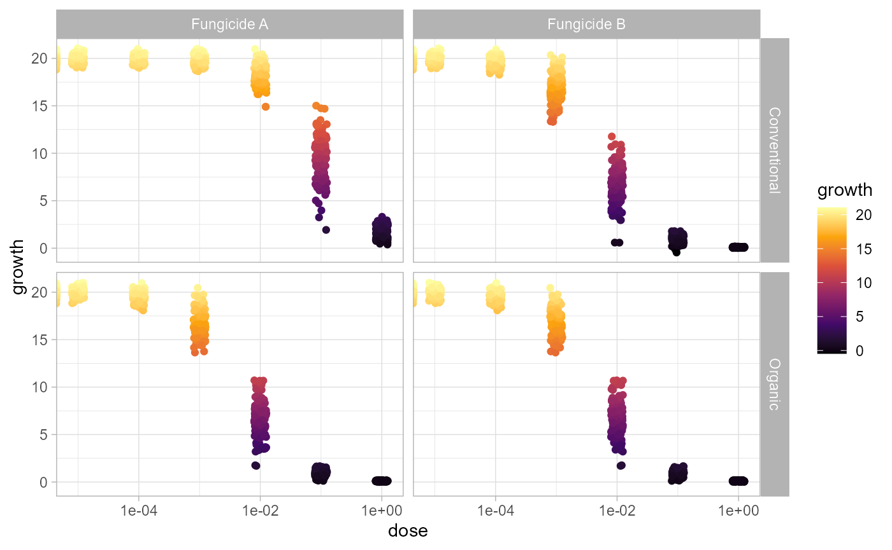
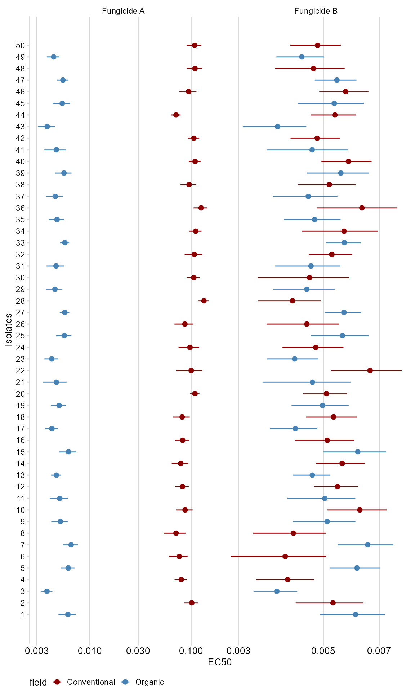
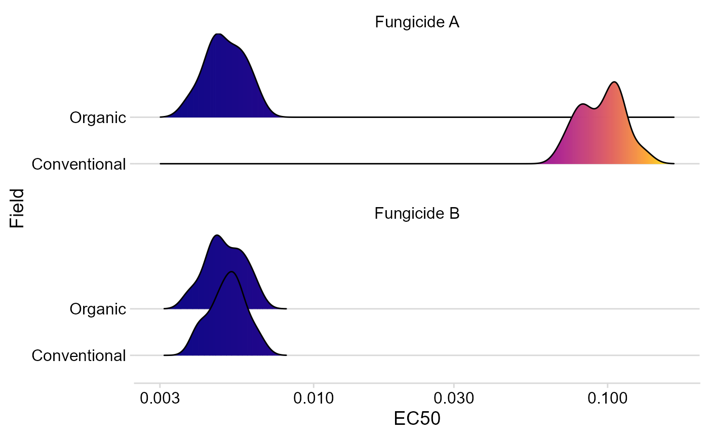

Estimate EC50 with one model
Kaique S Alves
2026-05-24
Source:vignettes/estimate_EC50.Rmd
estimate_EC50.RmdIntroduction
Use estimate_EC50() when you already know which
dose-response model should be fitted to each isolate. The function runs
the same drc model across isolates and optional strata,
then returns an EC50 fit object that behaves like a data frame and also
stores the information needed for plotting and prediction.
Data
The package includes multi_isolate, a simulated dataset
of mycelial growth under increasing fungicide doses for 50 fungal
isolates, two field systems, and two fungicides.
## isolate field fungicida dose growth
## 1 1 Organic Fungicide A 0e+00 20.2082399
## 2 1 Organic Fungicide A 1e-05 20.1168279
## 3 1 Organic Fungicide A 1e-04 19.2479678
## 4 1 Organic Fungicide A 1e-03 15.8123455
## 5 1 Organic Fungicide A 1e-02 7.3206757
## 6 1 Organic Fungicide A 1e-01 0.6985264Inspect the raw dose-response data before fitting models.
ggplot(multi_isolate, aes(dose, growth, color = growth)) +
geom_jitter(width = 0.1) +
facet_grid(field ~ fungicida) +
scale_x_log10() +
scale_color_viridis_c(option = "B", direction = 1) +
theme_light()## Warning in scale_x_log10(): log-10 transformation introduced
## infinite values.
Estimate EC50
estimate_EC50() needs the same model ingredients you
would pass to drc::drm(): a formula, a data frame, and a
model function such as drc::LL.3(). Use
isolate_col to identify isolates and
strata_col for grouping columns such as field, fungicide,
year, or location.
fit <- estimate_EC50(
growth ~ dose,
data = multi_isolate,
isolate_col = "isolate",
strata_col = c("field", "fungicida"),
interval = "delta",
fct = drc::LL.3()
)
head(fit)## ID field fungicida Estimate Std..Error Lower
## 1 1 Organic Fungicide A 0.006072082 0.0005740341 0.004902813
## 1751 1 Organic Fungicide B 0.006072082 0.0005740341 0.004902813
## 36 2 Conventional Fungicide A 0.101455765 0.0076364691 0.085900787
## 1786 2 Conventional Fungicide B 0.005297468 0.0005233600 0.004231418
## 71 3 Organic Fungicide A 0.003776957 0.0002432571 0.003281459
## 1821 3 Organic Fungicide B 0.003776957 0.0002432571 0.003281459
## Upper
## 1 0.007241351
## 1751 0.007241351
## 36 0.117010744
## 1786 0.006363517
## 71 0.004272456
## 1821 0.004272456The result keeps the isolate identifier in ID, then
returns the strata columns and the effective-dose estimate columns from
drc::ED().
Extract Fit Information
Use the extractor helpers when you want a specific part of the fitted
object. ec50_estimates() returns a plain data frame, while
ec50_metadata() summarizes the model setup that is stored
with the fit.
df_ec50 <- ec50_estimates(fit)
head(df_ec50)## ID field fungicida Estimate Std..Error Lower
## 1 1 Organic Fungicide A 0.006072082 0.0005740341 0.004902813
## 1751 1 Organic Fungicide B 0.006072082 0.0005740341 0.004902813
## 36 2 Conventional Fungicide A 0.101455765 0.0076364691 0.085900787
## 1786 2 Conventional Fungicide B 0.005297468 0.0005233600 0.004231418
## 71 3 Organic Fungicide A 0.003776957 0.0002432571 0.003281459
## 1821 3 Organic Fungicide B 0.003776957 0.0002432571 0.003281459
## Upper
## 1 0.007241351
## 1751 0.007241351
## 36 0.117010744
## 1786 0.006363517
## 71 0.004272456
## 1821 0.004272456
ec50_metadata(fit)## $formula
## growth ~ dose
##
## $data_columns
## [1] "isolate" "field" "fungicida" "dose" "growth"
##
## $isolate_col
## [1] "isolate"
##
## $strata_col
## [1] "field" "fungicida"
##
## $model_labels
## [1] "LL.3"
##
## $n_models
## [1] 100The fitted curve coordinates are also available without rebuilding
the model. This is useful when you want to make a custom
ggplot2 figure.
curves <- curve_data(fit)
head(curves)## field fungicida isolate model dose growth
## 1 Organic Fungicide A 1 LL.3 1.000000e-05 19.86338
## 1.1 Organic Fungicide A 1 LL.3 1.059560e-05 19.86006
## 1.2 Organic Fungicide A 1 LL.3 1.122668e-05 19.85657
## 1.3 Organic Fungicide A 1 LL.3 1.189534e-05 19.85289
## 1.4 Organic Fungicide A 1 LL.3 1.260383e-05 19.84901
## 1.5 Organic Fungicide A 1 LL.3 1.335452e-05 19.84493
## .curve_group
## 1 Organic.Fungicide A.1.LL.3
## 1.1 Organic.Fungicide A.1.LL.3
## 1.2 Organic.Fungicide A.1.LL.3
## 1.3 Organic.Fungicide A.1.LL.3
## 1.4 Organic.Fungicide A.1.LL.3
## 1.5 Organic.Fungicide A.1.LL.3The stored drc model objects are available for advanced
diagnostics.
models <- fitted_models(fit)
length(models)## [1] 100
names(models)[1:3]## [1] "field=Organic_fungicida=Fungicide A_isolate=1_model=LL.3"
## [2] "field=Organic_fungicida=Fungicide B_isolate=1_model=LL.3"
## [3] "field=Conventional_fungicida=Fungicide A_isolate=2_model=LL.3"Plot Fitted Curves
Use plot_EC50_curves() directly on the fitted object.
The function reads the formula, original data, groups, and stored fitted
models from fit.
plot_EC50_curves(fit)
Visualize Results
Plot EC50 estimates and confidence intervals for all isolates.
plot_ec50 <- df_ec50
plot_ec50$ID <- as.numeric(plot_ec50$ID)
ggplot(plot_ec50, aes(ID, Estimate, color = field)) +
geom_point(size = 2) +
geom_errorbar(aes(ymin = Lower, ymax = Upper, color = field), width = 0) +
facet_wrap(~fungicida, scales = "free_x", ncol = 2) +
scale_y_log10() +
scale_x_continuous(breaks = 1:50) +
scale_color_manual(values = c("darkred", "steelblue")) +
labs(x = "Isolates", y = "EC50") +
theme_minimal_vgrid(font_size = 10) +
coord_flip() +
theme(
axis.text.x = element_text(size = 10),
legend.position = "bottom"
)
Density plots can help compare EC50 distributions between strata.
ggplot(df_ec50, aes(Estimate, field, fill = after_stat(x))) +
geom_density_ridges_gradient(alpha = 0.3) +
scale_x_log10() +
scale_fill_viridis_c(option = "C") +
facet_wrap(~fungicida, nrow = 2) +
theme_minimal_hgrid() +
labs(x = "EC50", y = "Field") +
theme(legend.position = "none")## Picking joint bandwidth of 0.0328## Picking joint bandwidth of 0.0285